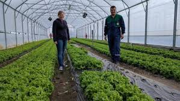

1932 - Stara mama Jožefa in njen mož Anton postavita temelje kmetije v Peklu pri Trebnjem. Kmetija je bila majhna, usmerjena v samooskrbo.

1965 - Kmetijo prevzame njuna hči Marija, ki razširi pridelavo zelenjave in začne prodajo na bližnjih tržnicah.

1995 - Marijina hči Nataša Butolen se po šolanju vrne na kmetijo in začne uvajati prve sodobne spremembe.

2005 - Kmetija popolnoma preide v roke Nataše, ki se odloči za prehod na ekološko kmetovanje.

2010 -Postavljeni so prvi rastlinjaki, ki izkoriščajo termalno vodo za ogrevanje.

2015 - Uvedba pametnega kompostnega sistema in prehod na popolnoma trajnostno pridelavo brez umetnih gnojil.

2018 - Zagon storitve "Zelenjava na dom", ki omogoča dostavo svežih pridelkov v Trebnje, Novo mesto in Ljubljano.

2022 - Kmetija Kalijak postane ena izmed vodilnih ekoloških kmetij v Sloveniji, sodeluje z restavracijami in trgovinami ter organizira izobraževalne delavnice za mlade kmete.

2023 - Postavitev dodatnih rastlinjakov in razširitev ponudbe na zelišča in jagodičevje.
202 - Kmetija začne uporabljati pametne senzorje in AI analizo za optimizacijo rabe vode, hranil in temperature v rastlinjakih.

2025 - Uvedba prvega popolnoma samooskrbnega ekološkega e-tržnega sistema, kjer kupci preko spletne platforme vnaprej naročajo sezonske pridelke. Kmetija Kalijak postane model sodobnega ekološkega kmetovanja v Sloveniji.